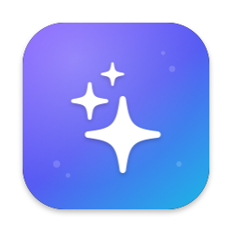

Tcleaner 技术支持
面向 AI 与开发者的 Mac 磁盘清理工具 · macOS 14 及以上
常见问题
为什么需要访问个人文件夹？
缓存分布在个人文件夹的多个位置（资源库、~/.cache、项目文件夹等）。Mac App Store 的应用只能读取你在“打开”面板中选择的位置，所以首次启动时需要你确认一次个人文件夹，之后会记住授权。
为什么 macOS 询问“访问其他 App 的数据”？
只有开启“包含聊天软件”后才会出现。微信、QQ 等的数据存放在各自的沙盒中，macOS 会先征得你的同意。聊天记录数据库永远不会被删除，聊天图片、视频和文件只会列出，不会自动勾选。
“安全”“需确认”“谨慎”是什么意思？
- 安全：对应工具会自动重建的缓存，默认勾选。
- 需确认：可以重新获得，但需要重新下载或重建，例如模型、虚拟环境。
- 谨慎：可能无法恢复的数据，例如离线实验记录、Xcode 归档、聊天中的旧媒体。
清理后空间没有马上变多？
移到废纸篓的文件要在清倒废纸篓后才会释放空间；另外，macOS 可能暂时保留本地 Time Machine 快照，稍后会自动释放。
如何恢复误删的内容？
个人文件都会移到废纸篓，在“访达”的废纸篓中选择“放回原处”即可。被直接删除的只有可自动重建的缓存。
如何让某一项永不被清理？
右键点按该项，选择“永不清理此项”。可在“设置 › 位置”中管理这份列表。
如何卸载？
将 Tcleaner 移到废纸篓，再删除 ~/Library/Containers/com.tcleaner.app。
联系我们
请在 GitHub Issues 提交问题或建议，并注明 macOS 版本和 Tcleaner 版本。
Tcleaner Support
Disk cleanup for AI and developer workflows · macOS 14 or later
FAQ
Why does Tcleaner need access to my home folder?
Caches live in several places inside your home folder (Library, ~/.cache, project folders). Mac App Store apps can only read locations you pick in an Open panel, so Tcleaner asks you to confirm your home folder once and remembers it.
Why does macOS ask about “data from other apps”?
Only after you turn on “Include chat apps”. WeChat, QQ and similar apps keep their data in their own sandbox, so macOS asks for your consent. Chat history databases are never removed; chat pictures, videos and files are only listed, never selected automatically.
What do Safe, Review and Caution mean?
- Safe: caches the owning tool rebuilds automatically. Selected by default.
- Review: can be recovered, but needs a download or rebuild (models, virtual environments).
- Caution: data that may be impossible to recreate (offline experiment runs, Xcode archives, old chat media).
Why didn't free space grow right away?
Files moved to the Trash free space once you empty the Trash. macOS may also keep local Time Machine snapshots for a while and release them later.
How do I restore something?
Personal files go to the Trash; choose “Put Back” there. Only caches that rebuild automatically are deleted outright.
How do I keep an item from ever being cleaned?
Right-click it and choose “Never Clean This”. Manage the list in Settings › Locations.
How do I uninstall?
Move Tcleaner to the Trash, then delete ~/Library/Containers/com.tcleaner.app.
Contact
Please open an issue on GitHub Issues with your macOS and Tcleaner versions.